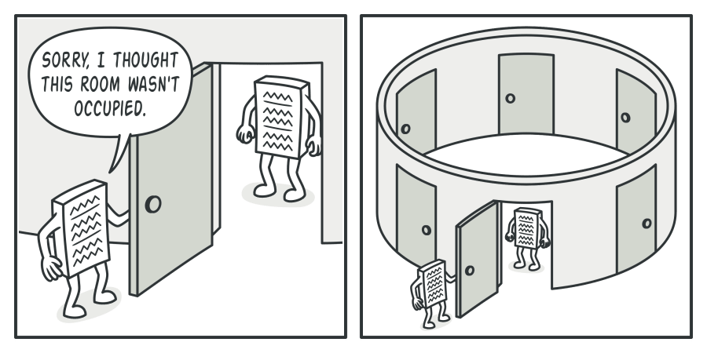
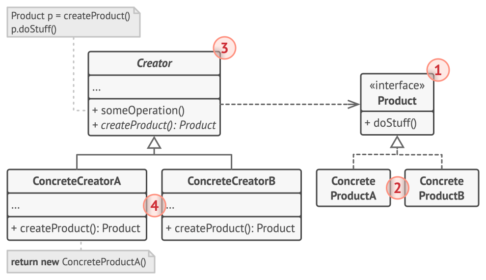

Singleton este un șablon de proiectare creațional care vă permite să vă asigurați că o clasă are o singură instanță, oferind în același timp un punct de acces global la această instanță.
Șablonul Singleton rezolvă două probleme în același timp, încălcând Principiul Responsabilității Unice (Single Responsibility Principle):

Avantaje și Dezavantaje:
| Avantaje | Dezavantaje |
|---|---|
| Puteți fi sigur că o clasă are o singură instanță. | Încalcă Principiul Responsabilității Unice. |
| Obțineți un punct de acces global la acea instanță. | Șablonul Singleton poate masca un design deficitar, de exemplu, când componentele programului știu prea multe unele despre celelalte. |
| Obiectul de tip singleton este inițializat doar atunci când este solicitat pentru prima dată. | Șablonul necesită tratament special într-un mediu multithreaded pentru a evita crearea instanței de mai multe ori simultan. |
Factory (Metoda Fabrică) este un șablon de proiectare creațional care oferă o interfață pentru crearea obiectelor într-o superclasă, dar permite subclaselor să modifice tipul obiectelor care vor fi create.

Avantaje și Dezavantaje:
| Avantaje | Dezavantaje |
|---|---|
| Evitați cuplarea strânsă între creator și produsele concrete. | Codul poate deveni mai complicat, deoarece trebuie să introduceți o mulțime de subclase noi pentru a implementa tiparul. |
| Single Responsibility Principle: Puteți muta codul de creare a produsului într-un singur loc. | Cel mai bun scenariu este atunci când introduceți tiparul într-o ierarhie existentă de clase de creatori. |
| Open/Closed Principle: Puteți introduce noi tipuri de produse fără a strica codul client existent. | Necesită o structură clară de moștenire. |